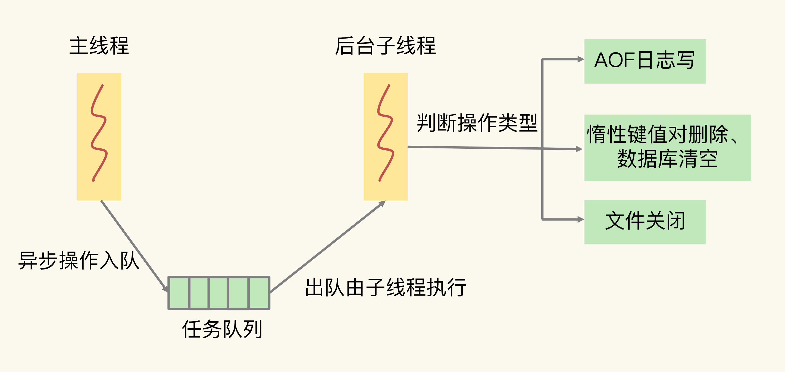
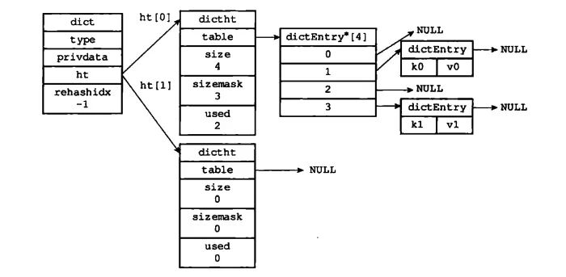
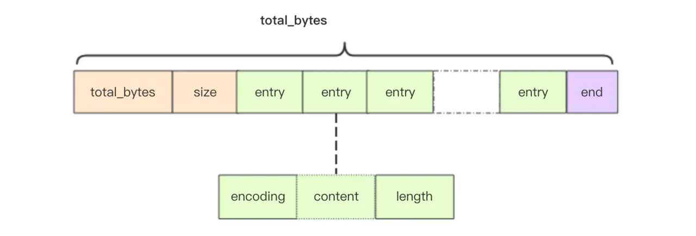
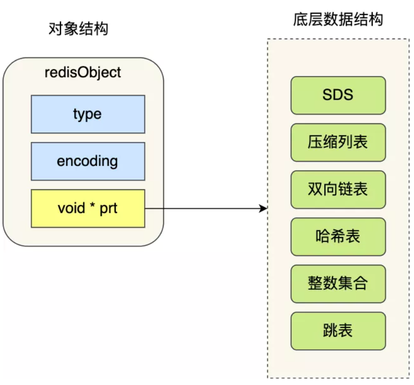
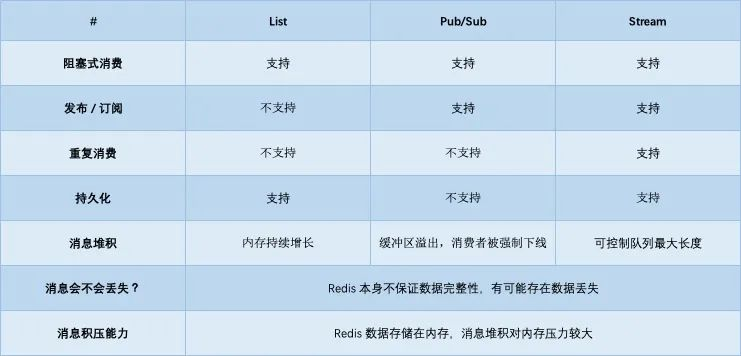

深入理解Redis
第一章 Redis中的单线程
1.1 为什么Redis采用单线程
redis中的单线程，主要指的是Redis的网络IO和键值对的读写是由一个线程来完成的，但是其余的功能，比如持久化、异步删除、集群数据同步等功能其实还是由其余的线程来完成的。
为什么使用单线程？】
多线程来说，它虽然能够提升系统同时处理的请求数，提高吞吐量。但是其实如果线程过多了，系统的吞吐量其实是会逐渐下降的，因为他们可能会有线程上下文的切换的消耗，而且为了保证在多线程环境下修改共享变量的正确性，还得添加同步机制，这个额外的机制同样也会造成额外的开销，同时也会降低系统的易调试性和可维护性。如果不添加额外的同步机制，就可能会引起多线程编程模式下面临的共享资源的并发访问控制的问题。
而且早期官方认为Redis是基于内存的操作，CPU成为Redis的瓶颈的情况很少见，它的瓶颈最可能是内存的大小或者网络限制。
因此Redis采用的是单线程。
单线程Redis为什么这么快？】
- 大部分操作都是在内存中进行的。
- 高效的数据结构，比如哈希表、跳表
- IO多路复用机制，能够在网络IO操作中并发处理大量的客户端请求。Redis是基于多路复用模型中的epoll模型进行网络通讯的，epoll模型只需要一个线程就可以监听多个连接，epoll模型的事件监听机制，所有的数据都是异步操作，也不会阻塞主线程。
Redis单线程处理IO请求性能的瓶颈】
- 任意一个请求在server中一旦发生耗时，都会影响整个server的性能，也就是说后面的请求都要等前面这个耗时请求处理完成，自己才能被处理到。耗时的操作包括以下几种：
- 操作bigkey：写入一个bigkey在分配内存时需要消耗更多的时间，同样，删除bigkey释放内存同样会产生耗时；
- 使用复杂度过高的命令：例如SORT/SUNION/ZUNIONSTORE，或者O(N)命令，但是N很大，例如lrange key 0 -1一次查询全量数据；
- 大量key集中过期：Redis的过期机制也是在主线程中执行的，大量key集中过期会导致处理一个请求时，耗时都在删除过期key，耗时变长；
- 淘汰策略：淘汰策略也是在主线程执行的，当内存超过Redis内存上限后，每次写入都需要淘汰一些key，也会造成耗时变长；
- AOF刷盘开启always机制：每次写入都需要把这个操作刷到磁盘，写磁盘的速度远比写内存慢，会拖慢Redis的性能；
- 主从全量同步生成RDB：虽然采用fork子进程生成数据快照，但fork这一瞬间也是会阻塞整个线程的，实例越大，阻塞时间越久；
- 并发量非常大时，单线程读写客户端IO数据存在性能瓶颈，虽然采用IO多路复用机制，但是读写客户端数据依旧是同步IO，只能单线程依次读取客户端的数据，无法利用到CPU多核。这里的同步并不是指直接整个网络IO是同步的，而是指从内核缓冲区中拷贝数据的操作是同步操作。
针对问题1：一方面需要业务人员去规避，一方面Redis在4.0推出了lazy-free机制，把bigkey释放内存的耗时操作放在了异步线程中执行，降低对主线程的影响。
针对问题2，Redis在6.0推出了多线程，可以在高并发场景下利用CPU多核多线程读写客户端数据，进一步提升server性能，当然，只是针对客户端的读写是并行的，每个命令的真正操作依旧是单线程的。
Redis6中引入的多线程
主要是为了提高网络IO读写性能，但是Redis的执行命令仍然是单线程顺序执行的，不需要担心线程安全问题。
1.2 IO多路复用
在说 IO 多路复用之前，先说一说 Linux 的 IO 模型：
假设我们在用户态想要读取系统中的某些数据，就需要使用系统调用，然后让操作系统从磁盘读取对应的数据到内核缓冲区，接着将内核缓冲区的数据拷贝到用户态，然后交给我们。
- 阻塞 IO：就和上面说的一样，对于数据等待阶段还有数据拷贝阶段，都是阻塞的。
- 非阻塞 IO：如果我们发现内核缓冲区不存在对应的数据的时候，就直接返回错误给用户，然后用户只需要去不断轮询去查看内核缓冲区有没有数据，如果有数据了，就等待拷贝，然后返回。注意，非阻塞 IO 在数据等待阶段是非阻塞的，不过需要不停的执行命令来查看，无形中增加了 CPU 的压力，以及用户态和内核态切换的开销。
1.3 如何避免单线程模型的阻塞
对于Redis来说，到底有哪些操作会导致主线程阻塞呢？】
- 客户端：网络 IO，键值对增删改查操作，数据库操作；
对于网络IO来说，如果它有时候比较慢，但是Redis使用了IO多路复用机制，避免了主线程一直处在等待网络连接或请求到来的状态，因此网络IO不是导致Redis阻塞的因素。
在Redis中，由于它对很多数据结构操作都做了优化，基本为O(1)，所以如果操作复杂度为O(N)，就必须重视，就比如集合元素中的聚合统计如并集、交集、差集等等，或者集合元素全量查询操作如HGETALL、SMEMBERS。
而且注意，对于集合自身或者bigkey的删除操作同样也有潜在的阻塞风险。删除操作的本质是要释放键值对占用的内存空间，但是操作系统还需要将释放掉的内存块插入一个空闲内存块的链表，以便后续进行管理和再分配。当然不仅仅是插入到链表，还会伴随着空闲块的合并，以及有可能将内存归还到操作系统。如果一下子释放了大量内存，也有可能导致Redis主线程阻塞。
利用FLUSHDB或FLUSHALL操作将Redis数据库给清空，同样也可能会造成主线程阻塞。
- 磁盘：生成 RDB 快照，记录 AOF 日志，AOF 日志重写；
当生成RDB快照和AOF日志重写的时候，虽然是交给了子进程去做，但是在fork阶段同样会导致Redis主线程的阻塞。同样，如果AOF日志开启的策略是同步写，每次执行一条命令都会去写入AOF文件中，再加上可能有大量的写操作，也有可能导致主线程阻塞。
- 主从节点：主库生成、传输 RDB 文件，从库接收 RDB 文件、清空数据库、加载 RDB 文件；
同样的，主库生成RDB需要阻塞主线程，但是主库在复制过程中，创建和传输RDB文件都是由子进程来完成的，不会阻塞主线程。但是对于从库来说，它在接受了RDB文件之后，需要使用FLUSHDB来清空当前数据库。清空之后还得将RDB文件加载到内存。
- 切片集群实例：向其他实例传输哈希槽信息，数据迁移。
对于刚开始部署切面集群的时候，每个Redis实例上分配的哈希槽信息需要在不同的实例间传递，同时当需要进行负载均衡或有实例增删时，数据会在不同的实例之间进行迁移。不过，哈希槽的信息量不大，而数据迁移是渐进式执行的，所以，一般来说，这两类操作对 Redis 主线程的阻塞风险不大。
如果你使用了 Redis Cluster 方案，而且同时正好迁移的是 bigkey 的话，就会造成主线程的阻塞，因为 Redis Cluster 使用了同步迁移。当没有 bigkey 时，切片集群的各实例在进行交互时不会阻塞主线程
异步的子线程操作】
对于上述的几个可能阻塞主线程的操作，我们可以利用异步的子线程进行异步操作。
Redis启动之后，会使用操作系统提供的pthread_create函数创建3个子线程，分别是AOF日志写操作、键值对删除、文件关闭的异步执行
主线程通过一个链表形式的任务队列和子线程进行交互。当收到键值对删除和清空数据库的操作时，主线程会将这个操作封装成一个任务，放入到任务队列中，然后给客户端返回一个完成信息，表明删除已经完成。但是此时这个删除还未被真正执行。后台子线程会从任务队列中读取任务之后才会开始实际的删除操作，并释放相应的内存空间。lazy free。这个删除键值对或清空数据库的操作并不会阻塞主线程，避免了对主线程的性能影响。注意这种异步删除会现在主线程中将其对应的全局键值对删除，然后对于内存的释放操作等放到任务队列中由子线程执行
而且如果AOF日志配置选择的是everysec，主线程同样会将AOF写日志操作封装成一个任务放到任务队列中，后台子线程读取任务之后开始自行写入AOF日志，主线程同样也不需要一直等待AOF日志写完了。

lazy free是Redis4.0之后提供的功能（在Redis6.0中，开启lazyfree-lazy-user-del，使用DEL和UNLINK就没有区别了）
- 使用UNLINK命令来删除bigkey或者大集合。
- 使用FLUSHDB ASYNC或FLUSHALL ASYNC让子线程异步清空数据库。
如果是4.0之前的Redis，在删除bigkey的时候可以用集合类型提供的SCAN命令读取数据，然后再进行删除。因为SCAN命令可以每次只读取一部分数据，可以避免一次性删除大量key给主线程带来的阻塞。对于Hash类型的bigkey来说，也可以使用HSCAN，然后使用HDEL。
由于聚合运算和从库加载RDB文件无法使用异步执行，但同样也有优化空间：
- 集合全量查询和聚合操作：可以使用 SCAN 命令，分批读取数据，再在客户端进行聚合计算；
- 从库加载 RDB 文件：把主库的数据量大小控制在 2~4GB 左右，以保证 RDB 文件能以较快的速度加载。
1.4 细说lazy-free
lazy-free是Redis4.0新增的功能，默认是关闭的，需要手动开启。
手动开启lazy-free时，有4个选项可以控制，分别对应不同场景下，要不要开启异步释放内存机制：
- lazyfree-lazy-expire：key在过期删除时尝试异步释放内存
- lazyfree-lazy-eviction：内存达到maxmemory并设置了淘汰策略时尝试异步释放内存
- lazyfree-lazy-server-del：执行RENAME/MOVE等命令或需要覆盖一个key时，删除旧key尝试异步释放内存
- replica-lazy-flush：主从全量同步，从库清空数据库时异步释放内存
即使开启了lazy-free，如果直接使用DEL命令还是会同步删除key，只有使用UNLINK命令才会可能异步删除key。
这也是最关键的一点，上面提到开启lazy-free的场景，除了replica-lazy-flush之外，其他情况都只是可能去异步释放key的内存，并不是每次必定异步释放内存的。
开启lazy-free后，Redis在释放一个key的内存时，首先会评估代价，如果释放内存的代价很小，那么就直接在主线程中操作了，没必要放到异步线程中执行（不同线程传递数据也会有性能消耗）。
什么情况才会真正异步释放内存？这和key的类型、编码方式、元素数量都有关系（详细可参考源码中的lazyfreeGetFreeEffort函数）：
- 当Hash/Set底层采用哈希表存储（非ziplist/int编码存储）时，并且元素数量超过64个
- 当ZSet底层采用跳表存储（非ziplist编码存储）时，并且元素数量超过64个
- 当List链表节点数量超过64个（注意，不是元素数量，而是链表节点的数量，List的实现是在每个节点包含了若干个元素的数据，这些元素采用ziplist存储）
只有以上这些情况，在删除key释放内存时，才会真正放到异步线程中执行，其他情况一律还是在主线程操作。也就是说String（不管内存占用多大）、List（少量元素）、Set（int编码存储）、Hash/ZSet（ziplist编码存储）这些情况下的key在释放内存时，依旧在主线程中操作。
可见，即使开启了lazy-free，String类型的bigkey，在删除时依旧有阻塞主线程的风险。所以，即便Redis提供了lazy-free，我建议还是尽量不要在Redis中存储bigkey。
个人理解Redis在设计评估释放内存的代价时，不是看key的内存占用有多少，而是关注释放内存时的工作量有多大。从上面分析基本能看出，如果需要释放的内存是连续的，Redis作者认为释放内存的代价比较低，就放在主线程做。如果释放的内存不连续（大量指针类型的数据），这个代价就比较高，所以才会放在异步线程中去执行。
第二章 底层数据结构
Redis其实是存在数据库的概念的，比如默认的就有16个数据库，只不过我们平时都是默认使用0号数据库。
1 | |
2.0 全局哈希表（hashtable）
概念】
所谓的哈希表，其实就是一个保存键值对（key-value）的数据结构。
在Redis中，用了一张全局的哈希表来存取所有的key，它的优点在于能够以O(1)的复杂度快速的查询数据。但是随着key的值越来越多，难免会造成哈希冲突，而Redis解决哈希冲突的办法就是使用拉链法，将冲突的key构成一个链表。
但是如果链表过长了，它的查询效率就会退化成O(n)，因此在就会触发rehash进行扩容，对哈希表的大小进行扩展。
rehash】
首先rehash的触发条件和负载因子有关，而负载因子：哈希表已经保存的节点数量/哈希表的大小
- 当负载因子大于等于1，并且Redis没有在执行bgsave命令（rdb全量快照）或者bgrewiteaof命令（aof重写），也就是没有执行RDB快照或者没有进行AOF重写的时候，就会进行rehash。
- 当负载因子大于等于5，此时说明哈希冲突非常严重了，不管有没有在进行RDB快照或者AOF重写都会强制性的rehash操作。
- 当负载因此小于0.1的时候，会触发缩容机制。同样也不会考虑AOF和RDB过程是否进行中。
那么Redis是如何进行rehash过程的呢？】
首先我们得知道，全局哈希表的具体结构：
1 | |

可以看到，在Redis中的字典结构中，会有两个哈希表，同时考虑到在Redis数据量大的时候，进行rehash过程中可能会造成Redis线程阻塞，无法服务其他的请求，这样Redis就无法快速访问数据了，因此，Redis中的rehash采用的是渐进式rehash：
所谓的渐进式哈希，其实就是并不是集中式的一次性完成整个哈希过程，而是分多次、渐进式地完成的，Redis将数据的迁移任务分散到了每次的请求中。
- 在字典中维护了一个rehashidx变量，刚开始rehash的时候，它的值被设置为0，也就是表示第一个哈希表从索引0开始。
- 在每次的增删改查等redis操作的时候，都会去判断当前的rehashidx变量的值，如果不是-1就表示正在进行rehash，就会顺带的把rehashidx索引位置的元素迁移到第二个哈希表中。
- 随着操作的不断执行，最终会在某个时间点上，哈希表1中所有的键值对都会被rehash到哈希表2中，此时就将rehashidx重新设置为-1，表示rehash操作已经完成。
同时，rehash被触发之后，Redis会按照一定的频率（100ms/次）执行rehash操作。所以即使没有收到新请求，Redis也会定时执行一次rehash操作。缩短整个rehash的过程。而且每次执行时常不会超过1ms，以免对其他任务造成影响。
rehash过程中的增删改查】
在渐进式rehash过程中，字典会同时使用到两个哈希表，因此在此过程中，字典的增删改查等操作就会在两个哈希表上进行：比如说查找一个key，会先在第一个哈希表中查找，如果没找到就会去第二个哈希表中查找；而且对于新添加的字典的键值对，会一律保存到第二个哈希表。这样就能保证第一个哈希表中的键值对数量只减不增，并随着rehash操作的执行而最终变成空表。
2.1 SDS（symbol dynamic string）
简单动态字符串，Redis中的String类型有什么特殊之处呢？
虽然Redis采用的是c语言进行实现，但是它并没有直接使用C语言中的char*数组来实现字符串，而是自己封装了一个名为Simple Dynamic String的数据结构来表示字符串。
C语言字符串的缺陷】
- 获取字符串长度的时间复杂度为O(N)：对于C语言来说，它的char*指针只是指向字符数组的起始位置，字符数组的结尾位置就用”\0”来表示。因此获取字符串长度的时候就得从头遍历到尾部。
- 无法保存二进制数据：它的结尾是以”\0”字符标识，因此字符串中不能够包含”\0”字符，但是二进制流等数据中就有可能包含这种特殊字符。
- 字符串操作函数不高效不安全：比如有缓冲区溢出的风险，有可能造成程序运行终止。
SDS的数据结构】
- len：记录字符串的长度，在获取长度的时候，只需返回这个变量即可。1字节，因此SDS的内容最大512MB
- alloc：分配给字符串的空间长度。在修改字符串的时候，就可以通过alloc-len计算出剩余的空间大小。如果剩余空间不满足修改需求，就会自动将SDS空间扩展至执行修改所需的空间大小（小于1MB翻倍扩容，大于1MB按照1MB扩容），然后才执行实际的修改操作。因此SDS就无需担心缓冲区溢出的风险。1字节
- flags：用来表示不同类型的SDS，分别为sdshdr5、8、16、32、54。1字节
- buf[]：字符数组，用来保存实际的数据，不仅可以保存字符串，也可以保存二进制数据。’\0’会额外占用1字节
5种类型的SDS】
上述的SDS是Redis6.x的结构，在Redis3.0的时候它的结构如下所示：
1 | |
但是Redis中不同长度的字符串占用的头部是相同的，造成空间的浪费，因此就有了Redis6中的SDS模型（在3.2的时候变化的）。
上述说到，SDS中有一个flags标志位，用来标志不同类型的SDS，那么他们的区别是什么呢？
数据结构中的len和allo成员的数据类型不同。
1 | |
之所以这么设计是为了能够灵活保存不同大小的字符串，从而有效节省内存空间，当保存小字符串的时候，结构体占用的空间也比较小。
除了设置不同类型的结构体，Redis在编程上还使用了专门的编译优化来节省内存空间，即在struct声明了attribute((packed))，作用是告诉编译器取消结构体在编译过程中的优化对齐，按照实际占用字节数进行对齐。
SDS优点】
- 使用O1复杂度获取字符串长度
- 放置缓冲区溢出，因为扩容机制
- 减少字符串修改带来的内存分配次数：空间预先分配和惰性空间释放机制（当Redis需要减少SDS字符串长度的时候，redis并不会直接释放多余的空间，而是使用free字段进行记录，以便下一次增加长度的时候使用。当然如果有需要的话，redis底层会自动的回收这部分空间，而不用担心这部分空间的冗余）。
- 二进制安全。
2.2 压缩列表（ziplist）
在一般的数组中，会要求我们每个元素的大小相同，如果我们想要存储不同长度的字符串，就需要以最大长度的字符串的大小为数组元素的大小，就会非常浪费空间。
但是数组是占用连续空间的，这种结构能很好的利用CPU缓存访问数据，提升效率，因此我们就可以去将数组进行压缩，让他同时兼顾效率和空间。

1 | |
虽然定义了这个结构体，但是根本就没有使用zlentry这个结构来作为压缩列表中用来存储数据节点中的结构，因为造成的空间浪费太严重了。
真正的节点结构】
- prev_entry_len：以字节为单位，记录了压缩列表中前一个节点的长度。该属性的长度可以是1字节或者5字节
- 如果前一个节点的长度小于254字节，那么previous_entry_length属性的长度为1字节，前一个节点的长度就保存在这一个字节里面
- 如果前一个节点的长度大于等于254字节，那么属性的长度就为5字节；其中属性的第一字节会被设置为0xFE（十进制254，作为这种情况的一个标记），而之后的四个字节则用于真正保存前一节点的占用的字节数。
- encoding：记录了节点的value（或者说content）属性所保存的类型以及长度。
在压缩列表中，如果要查找定位第一个元素和最后一个元素，就可以通过表头三个字段直接定位，复杂度为O1。
整数数组和压缩列表在查找时间复杂度上并没有很大的优势，那么Redis为什么还会将他们作为底层数据结构？】
- 内存利用率：数组和压缩列表都是非常紧凑的数据结构，它比链表占用的内存要更少。Redis是基于内存的数据库，因此要尽可能的提高内存的利用率。
- 数组对CPU高速缓存更加的友好。Redis在设计的过程中，集合数据元素在较少的情况下，默认采用内存紧凑排列的方式存储，同时利用CPU高速缓存不会降低访问速度。当数据元素超过设定阈值后，避免查询时间复杂度太高，就会转为哈希和跳表数据结构存储，保证查询效率。
- Redis底层使用数组和压缩链表对数据大小限制在64字节以下。当大于64字节会改变存储的数据结构。
总结】
- 压缩列表在空间利用率上极高，每个entry最多只有6字节的浪费
- 底层无链表结构，通过内存偏移量获取next或last节点的位置
- 在插入和删除的时候会有相当大的概率出现连锁更新，因此在使用的时候尽量保证所存的value位数相同。
连锁更新】
由于表示长度的字节大小不一样，当新节点的插入可能会导致下一个节点原本存放表示上一个节点的长度的空间大小不够，导致需要扩容这一字段。相应的该字段会由一个字节扩容到五个字节，四个字节的长度变化，当发生变化的节点原本的长度在250-253之间的时候，将会导致下一个节点存储上一个节点长度的空间发生变化，引起一个连锁扩容的情况，这一情况会一直持续，直到到达一个不需要扩容的节点为止。
2.3 紧凑列表（listpack）
我们知道的是，ziplist有着一个致命的缺陷，那就是连锁更新，而listpack是Redis5作为ziplist的替代品而引入的，在Redis6以后就已经作为哈希结构的基础底层结构了。
那么listpack相对于ziplist有什么优势呢？

首先listpack从结构上相对于ziplist，少了一个tail_offset（达到尾部的偏移量）字段，这个字段的作用是为了方便找到最后一个节点然后进行反方向的遍历。
新的listpack节点的定义如下：
1 | |
相对于ziplist的定义，它记录的不再是前一个节点的长度，而是自己的长度。同时它将记录自己的长度放到了节点的尾部。
- 不再需要zltail_offset属性也可以快速定位到最后一个节点。只需要使用listpack的总长度 - 最后一个节点的长度。
- 每个节点记录自己的长度，当本节点的值发生了改变，只需要更改自己的长度即可，不再需要更改别的节点的属性，解决掉了连锁更新问题
- listpack的内存使用率上逊色于ziplist
- 代码的实现或复杂度上面，极简且高效
2.4 快速列表（quicklist）
对于Redis中的双向链表来说，每个节点除了数据部分，都要额外的16字节的内存来表示prev和next（64bit系统的指针为8个字节），而且每个节点的内存都是单独分配的，容易加剧内存的碎片化，影响内存管理效率。
Redis3.2之后对于List类型的value来说，使用quicklist代替了ziplist和linkedlist。
对于quicklist来说，它其实是ziplist和linkedlist的结合体，它将linkedlist按段切分，每一段使用ziplist来紧凑存储，多个ziplist之间使用双向指针连接起来。
它相对于linkedlist来说，进一步压缩了空间

1 | |
对于quicklist的插入来说：
- 如果是往头节点（尾节点）插入，
- 如果此时对应的ziplist的容量足够，就直接插入到对应的ziplist中；
- 如果超出了容量限制，就会创建一个新的quicklistNode，这个新的node里面又会包含新的ziplist，而新数据就存储在这里面，并且这个新的quicklistNode就会插入到新的quicklist双向链表中。
- 如果是指定位置插入数据：
- 当插入位置所在的ziplist大小没有超过限制时，直接插入到ziplist中就好了；
- 当插入位置所在的ziplist大小超过了限制，但插入的位置位于ziplist两端，并且相邻的quicklist链表节点的ziplist大小没有超过限制，那么就转而插入到相邻的那个quicklist链表节点的ziplist中；
- 当插入位置所在的ziplist大小超过了限制，但插入的位置位于ziplist两端，并且相邻的quicklist链表节点的ziplist大小也超过限制，这时需要新创建一个quicklist链表节点插入。
- 对于插入位置所在的ziplist大小超过了限制的其它情况（主要对应于在ziplist中间插入数据的情况），则需要把当前ziplist分裂为两个节点，然后再其中一个节点上插入数据。
如果是quicklist的查询，因为每个quicklistNode其实记录了内部的ziplist的entry的个数，因此就可以通过index找到是哪个ziplist，然后进而找到对应的值。
2.5 跳表（skiplist）
zset类型在数据量较多或者成员是比较长的字符串的时候，Redis会使用skiplist作为有序集合的底层实现。
以空间换时间的方式提升了查找速度
1 | |

Skip List–跳表（全网最详细的跳表文章没有之一） - 简书 (jianshu.com)
我们的查找复杂度是O(logn)，空间复杂度O(n)。
对于查找过程，首先从最高层索引开始看，如果发现它的下一个比目标值要大，就会索引下沉，然后继续比较，直到到达最底层的链表。
对于插入过程，就有很大的讲究了：
- 如果我们每次插入元素之后都不更新索引，那么时间久了之后，就可能会导致skiplist的效率退化至O(N)。
- 如果我们按照严格的索引要求，那么每次插入数据都得重构索引，效率大大降低。
- 在数据量大的时候，可以如此分析：有2/n的数据会作为一级索引，有4/n的数据作为二级索引，有8/n的数据作为三级索引。因此就可以使用概率学，随机抽取2/n的数据作为一级索引，依次内推。在数据量大的时候，趋向于稳定，这也是我们选择的方向。
进一步说：在插入一个元素的时候，我们可以通过一个随机函数返回它的概率，也就是说，这个新插入的节点有1/2的几率建立一级索引，1/4的概率建立二级索引，1/8的概率建立三级索引…
1 | |
- 返回1表示插入该元素不需要建立索引（1/2）
- 返回2表示插入该元素需要建立一级索引（1/4）
- 依次内推。。
那么疑惑来了，之前不是说要让建立一级索引的概率为1/2吗？怎么这里又说等到该方法以1/4的概率返回2的时候才建立一级索引？首先我们得知道的是，建立二级索引的时候同时也会去创建一级索引，因此只要不建立索引的概率为1/2，那么剩下的能建立一级索引的概率就为1/2了，也就是建立一级索引的概率其实是将所有返回值大于等于2的值加起来，趋向于1/2。
对于元素插入的时间复杂度来说，最坏的是元素x要插入到每层索引中，所以插入数据到各层索引，最坏的时间复杂度为O(logn)。
2.6 整数集合（intset）
底层结构】
当集合类型的元素都是整数并且元素个数不超过512个时，会使用intset作为底层数据结构
1 | |
数组contents的类型为int8_t，但是不会保存任何int8_t类型的数据，它保存的是encoding属性对应的类型的数据。
升级过程】
为了解决内存，如果intset存储的是16位（-32768~32767）的整数，那么就可以使用int16_t的类型来存储数据。但是如果此时添加的数据超过了16位能表示的范围，于是int16_t就存储不下了，这个时候就得升级，将数据类型设置为int32_t。
- 根据新元素的类型扩展数组的空间
- 将其他的数据类型转换为与新元素的数据类型相同
- 将新元素插入到数据的合适位置，并更新encoding属性的值。
intset提供的升级过程增加了数组操作的灵活性并且能够达到节约内存的效果，但是它并没有提供降级操作

优点】
- 灵活性更高：intset可以自动升级底层数组来适应新元素，而不必担心出现类型错误。
- 节约内存：如果想要同时保存int16、32、64位的整数，就可以直接使用64位类型的数组作为intset的底层实现，但是如果intset里面都是16位的数据，而暂时没有出现64位的数据，就会造成空间的浪费。
2.7 redisObject
Redis采用redisObject结构来统一几种不同的数据类型，这样所有的数据类型就都可以通过相同的形式在函数间传递而不用使用特定的类型结构。同时为了识别不同的数据类型，redisObject中还定义了type和encoding来对不同的数据类型加以区分。简单来说，redisObject就相当于这些数据类型的父类，可以在函数间传递时隐藏具体的类型信息。
前面说到的全局哈希表，在dictEntry中会有一个指针val指向数据对象的地址，而这个val指向的地址的内存空间其实就是一个redisObject！
dictEntry 结构，表示哈希表节点的结构，结构里存放了 void * key 和 void * value 指针， *key 指向的是 String 对象，而 *value 则可以指向 String 对象，也可以指向集合类型的对象，比如 List 对象、Hash 对象、Set 对象和 Zset 对象。
void * key 和 void * value 指针指向的是 Redis 对象，Redis 中的每个对象都由 redisObject 结构表示，如下图：

1 | |
第三章 基本数据类型
3.0 String
底层结构】
字符串对象是Redis中最基本的数据类型，它的内部实现是通过int和SDS实现
String类型的内部编码有3种：int、raw、embstr
- 如果一个字符串对象保存的是整数值，并且这个整数值可以用long类型来表示，那么字符串对象会将整数值保存在字符串对象结构的ptr属性里面（将void*转换为long），并且将字符串对象的编码设置为int。
- 如果字符串对象保存的是一个字符串值，并且这个字符串值大于44字节，那么字符串对象将使用一个SDS来保存这个字符串，并将对象的编码设置为raw。
- 如果字符串值大小小于或等于44字节，那么字符串对象将使用一个SDS保存这个字符串值，并将对象的编码格式设置为embstr，注意此时redisObject和SDS是连续存放的。
上述的44字节随着Redis版本的变化也同时变化着，最新的一般为44字节（redis3.2之后从39变为44）
redisObject的type（4bits）、encoding（4bits）、lru（24bits）、refcount（4bytes）、ptr（8bytes，在64位系统中），于是redisObject就占用了16字节。
而SDS的capacity（1byte）、alloc（1byte）、flags（1byte），加上之前的就一共19字节了，因此就是64-16-3-1 = 44字节，这个1字节是结束符”\0”。
下面的图像对于redisObject部分有了简化

embstr编码是专门用于保存短字符串的一种优化编码方式，我们可以看到embstr和raw编码都会使用SDS来保存值，但不同之处在于embstr会通过一次内存分配函数来分配一块连续的内存空间来保存redisObject和SDS。而raw编码会通过调用两次内存分配函数来分别分配两块空间来保存redisObject和SDS。Redis这样做会有很多好处。
embstr编码将创建字符串对象所需的内存分配次数从raw编码的两次降低为一次- 释放
embstr编码的字符串对象同样只需要调用一次内存释放函数 - 因为
embstr编码的字符串对象的所有数据都保存在一块连续的内存里面可以更好的利用CPU缓存提升性能
应用场景】
- 作为缓存层
- 计数器、限速器、分布式ID
- 分布式系统共享session，例如SpringSession
- 二进制存储
3.1 List
底层结构】
在Redis3.2之前，List类型的底层结构有两种：
- 压缩列表：当列表的元素个数小于list-max-ziplist-entries配置（默认512个），同时列表中的每个元素的值都小于list-max-ziplist-value配置（默认64字节），Redis会选用压缩列表作为内部的实现来减少内存的使用。
- 链表：当列表类型无法满足压缩列表所需要的条件的时候，Redis就会使用链表作为内部实现。
在Redis3.2开始，List类型的底层使用快速列表（quicklist）代替了ziplist和linkedlist
应用场景】
消息队列：列表类型可以相当于队列去使用，生产者使用lpush将消息添加到list中，然后消费者就可以使用brpop从list的头部去拿消息进行消费。
用户订阅店铺：比如用户C订阅了店铺A和B，然后他们分别发送了两篇文章，为11和22。只要他们发送了文章，就会安装到C的list里面
1
2lpush likearticle:CID 11 22 // 文章推送
lrange likearticle:CID 0 10 // 查看用户C订阅的全部推文，只显示10条，类似分页lpush + lpop = stack
lpush + rpop = queue
lpush + ltrim = 有限集合
lpush + brpop = 消息队列
在电商网站的商品评论中，需要统计评论列表中的最新评论。
既然要统计最新评论，那么就必须要考虑选择的数据类型是有序的，而我们的List就是有序的（插入顺序有序），因此我们可以维护一个List，然后将最新的评论插入到List的头部：
1
2
3
4
5
6// List中当前的评论是{A,B,C,D,E,F}
LRANGE product1 0 2 // ABC
LRANGE product2 3 5 // DEF
// 如果在展示第二页之前，商品新增了一条评论G，List就变成了{G,A,B,C,D,E,F}
// 再次执行LRANGE product2 3 5 // CDE
// 发现评论C再次被展示出来了。关键在于List是通过元素在List中的位置来排序的，如果有新元素插入，就会导致原先的元素在List中的位置发生了变化，要是想解决这个问题，就可以去使用ZSet。
3.2 Hash
底层结构】
Redis中的Hash类型，内部同样也有两种编码格式：ziplist和hashtable，当然在redis6之后用listpack代替了ziplist。
和3.1说的List类型一样，当Hash中的数据不满足ziplist的要求的时候，就将转化为hashtable，因为此时ziplist的读写效率会下降，而hashtable的读写时间复杂度为O（1）。
应用场景】
相当于Java里面的Map<String, Map<Object, Object>>，可以用来实现早期的购物车。
1
2
3
4新增商品 hset shopcar:uid1024 334488 1 // 用户1024添加一件334488的商品到购物车
增加商品数量 hincrby shopcar:uid1024 334488 1
商品总数 hlen shopcar:uid1024
全部选择 hgetall shopcar:1024配置中心的配置项
计数器：
用于记录网站每一天、一月、一年的访问量
1
2HINCRBY MyBLOG 202204 1 // 记录2022年4月份的访问量
HINCRBY MyBLOG 202205 1也可以用于记录商品的好评数量、差评数量等
也可以实时记录当天的在线的人数。
3.3 Set
底层结构】
Set类型是一个无序且唯一的键值对集合。它的存储顺序不会按照插入的先后顺序进行存储。
一个集合最多可以存储232-1个元素。Redis除了支持集合内的增删改查，同时还支持多个集合取交集、并集、差集，合理地使用好集合类型，能在实际开发中解决很多实际问题。
集合类型的内部编码有两种：
- intset（整数集合）：当集合中的元素都是整数且元素个数小于set-maxintset-entries配置（默认512个）时，Redis会采用intset来作为集合的内部实现，从而减少内存的使用
- hashtable：当集合类型无法满足intset的条件时，会使用hashtable作为集合的内部实现。
应用场景】
集合的主要几个特性，无序、不可重复、支持并交差等操作。因此集合类型比较适合用来数据去重和保障数据的唯一性，还可以用来统计多个集合的交集、错集和并集等，当我们存储的数据是无序并且需要去重的情况下，比较适合使用集合类型进行存储。
Set的差集、并集和交集的计算复杂度较高，在数据量大的情况下，如果直接执行这些计算，会导致Redis实例阻塞。
因此可以从主从集群中选择一个从库，让它专门负责聚合计算；注意：SUNIONSTORE、SDIFFSTORE、SINTERSTORE做并集、差集、交集时，都会在Redis中生成一个新key，而从库默认是readonly不可写的，所以这些命令只能在主库使用。想在从库上操作，可以使用SUNION、SDIFF、SINTER，这些命令可以计算出结果，但不会生成新key。
如果是在集群模式使用多个key聚合计算的命令，一定要注意，因为这些key可能分布在不同的实例上，多个实例之间是无法做聚合运算的，这样操作可能会直接报错或者得到的结果是错误的！
或者把数据读取到客户端，在客户端完成聚合计算。但是这个可能会造成大量的网络开销。
也可以将这些统计数据与在线业务数据拆分开，实例单独部署，防止在做统计操作时影响到在线业务。
店铺抽奖活动：
1
2
3
4用户参加抽奖 sadd action UID1024
显示已经有多少人参与了 scard action
抽奖，从set中选n个人 srandmember key 2 随机抽2人，不删除；
随机抽3人，删除 spop key 3 // spop命令：随机移除并返回集合中一个或多个元素给商品点赞
1
2
3
4
5新增点赞 sadd productId UID1 UID2
取消点赞 srem productId UID1
展示所有点赞过的用户 smembers productId
点赞用户数统计 scard productId
判断某个人是否对该商品点过赞 sismember productId UID1
3.4 ZSet
内部结构】
相对于Set来说多了一个排序属性score（分值），ZSet同样不允许成员重复（score可以重复），但是它可以利用score对ZSet中的元素进行排序。
有序集合使用ziplist或skiplist组成
- 当有序集合保存的元素个数小于128（Hash和List都是默认512）并且每个元素的长度都小于64字节，采用ziplist进行存储。
- 如果不能满足上序条件，采用skiplist进行存储。
应用场景】
排行榜：比如文章点赞排行榜
1
2
3
4zincrby user:ranking articleID 10 // 新增十个赞
zincrby user:ranking articleID -1 // 取消点赞
zscore user:ranking articleID // 查看指定文章的点赞数
zrevrangebyrank user:ranking 0 9 // 点赞数最多的十篇文章电话号码排序或者姓名排序：使用ZRANGEBYLEX和ZREVRANGEBYLEX指令（分数相同）
在电商网站的商品评论中，需要统计评论列表中的最新评论
我们可以假设越新的评论权重越大，相对于List会使数据下标发生改变，zset中的数据的score是不变的，分页时记录上一次的范围起始值就可以了。具体如下：
假设当前的评论 List 是{A, B, C, D, E, F}（其中，A 是最新的评论，以此类推，F 是最早的评论，权重分别为 10，9，8，7，6，5）。 在展示第一页的 3 个评论时，按照权重排序，查出 ABC。 展示第二页的 3 个评论时，按照权重排序，查出 DEF。 如果在展示第二页前，又产生了一个新评论 G，权重为 11，排序为 {G, A, B, C, D, E, F}。 再次查询第二页数据时，权重还是会以 10 为准，逻辑上，第一页的权重还是 10，9，8。 查询第二页数据时，可以查询出权重等于 7，6，5 的数据，返回评论 DEF。 当想查询出最新评论时，需要以权重 11 为准，第一页数据的权重就是 11，10，9，返回评论 GAB。 再次查询第二页数据时，以权重 11 为准，查询出评论 CDE。
3.5 Bitmap
Bitmap本身是用String类型作为底层数据结构实现的一种统计二值状态的数据类型。String类型会保存为二进制的字节数组，所以Redis就是将字节数组的每个bit位利用起来，用来表示一个元素的二值状态。
Bitmap 提供了 GETBIT/SETBIT 操作，使用一个偏移值 offset 对 bit 数组的某一个 bit 位进行读和写。不过，需要注意的是，Bitmap 的偏移量是从 0 开始算的，也就是说 offset 的最小值是 0。当使用 SETBIT 对一个 bit 位进行写操作时，这个 bit 位会被设置为 1。Bitmap 还提供了 BITCOUNT 操作，用来统计这个 bit 数组中所有“1”的个数。
应用场景】
我们可以利用bitmap进行签到统计，比如我们要统计ID为3000的用户在2022年5月份的签到情况
1 | |
或者有这么一个需求，统计出1亿用户最近连续签到十天的用户个数？我们可以将每一天都作为一个key，然后每个key的value是一亿长度的bitmap。只需要将这10个bitmap做与操作，得到的结果是一个bitmap，然后就可以统计这个bitmap的1的个数，就是连续签到十天的用户总数了。总开销大概是10^8/8/1024/1024*10 = 120MB
3.6 HyperLogLog
它是一种用于统计基数（不重复元素）的数据集合，当集合元素数量非常多的时候，它计算基数所需要的空间总是固定的，而且很小。
在Redis里面，每个HyperLogLog键只需要花费12KB内存，就可以计算接近2^64个不同元素的基数。这和计算基数时，元素越多耗费内存就越多的集合形成鲜明对比。但是，因为它只会根据输入元素来计算基数，而不会储存输入元素本身，所以HyperLogLog不能像集合那样，返回输入的各个元素。
不过HyperLogLog 的统计规则是基于概率完成的，所以它给出的统计结果是有一定误差的，标准误算率是 0.81%。伯努利实验
应用场景】
在网页访问记录中，需要统计独立访客（Unique Visitor，UV）量。也就是对于一个网页，一个用户一天内的多次访问只能算作一次，我们可以使用set或者hash（HSET page1:uv userID 1）去做，但是当数据量比较大的时候，消耗的内存是非常大的。
于是我们使用HyperLogLog来作为存储结构
1 | |
第四章 持久化机制
Redis是基于内存的数据库，而服务器一旦宕机就会导致内存中的数据全部丢失，因此Redis的持久化机制是非常重要的。
4.1 AOF
对于MySQL的日志来说，它是有一个WAL机制，也就是先将修改的数据记录到日志中，再去执行指令。但是对于Redis来说，恰好相反。先将数据写入内存之后再记录日志。
- 可以避免额外的检查开销：Redis在进行记录日志的时候，并不会去进行语法检查。所以如果采用日志先写的方式，万一这条语句是错误的，就会导致日志恢复数据的时候出错。而采用日志后写的方式，会让系统先执行命令，只有命令执行成功了才会去记录日志。
- 写之后再记录日志，不会阻塞当前的写操作。
但是这样可能会导致我们记录写成功了，此时服务器宕机，还没来得及进行日志的持久化，就会导致数据的丢失。
再者AOF日志也是在主线程中执行的，如果在日志写入磁盘时，磁盘写压力大，就会导致写盘很慢，进而导致后续的操作无法执行了
三种写回策略】
| 配置项 | 写回时机 | 优点 | 缺点 |
|---|---|---|---|
| Always | 同步写回 | 可靠性高，数据基本不丢失 | 每个写命令都要落盘，性能影响大 |
| Everysec | 每秒写回 | 性能适中 | 宕机时丢失1秒内的数据 |
| No | 操作系统控制的写回 | 性能好 | 宕机时丢失数据较多 |
对于Everysec来说，每个写命令执行完，只是先将日志写到AOF文件的内存缓冲区，每隔一秒把缓冲区中的内容写入磁盘。
对于No来说，每个写命令执行完，只是先把日志写入AOF文件的内存缓存区，由操作系统决定何时将缓冲区内容写回磁盘。
AOF重写机制】
AOF日志过大的时候会造成性能问题：
- 文件系统本身会对文件大小有限制
- 文件过大，往里面追加记录的时候，效率会降低
- 宕机之后恢复数据时，恢复过程非常缓慢
AOF文件采用追加的方式，记录逐一接收到的写命令。因此一个键值对可能会进行多次的写，因此一个键值对可能会有很多的记录。而在重写的过程中，会根据这一条键值对的最新状态，为他生成对应的写入命令。这样一个键值对在日志中只需要用一条命令就可以了。
AOF的重写采用后台子进程bgrewriteaof来完成的，避免阻塞主线程导致性能下降。
每次执行重写的时候，主线程会fork出一个子进程。此时fork会把主线程的内存拷贝一份给子进程（其实并不是拷贝，详情见下面的注意事项），这里面就包含了数据库的最新数据。然后子进程就可以在不影响主线程的情况下，逐一把拷贝的数据写成操作，记入重写日志。
但是此时主线程并未阻塞，因此还是会有新的操作执行。Redis对于新来的操作还是会将其添加到AOF缓冲中，这可以保证即使宕机了，整个AOF日志仍然是齐全的；同时也会添加到AOF重写缓冲中，等到子进程重写完成之后，会将AOF重写缓冲中的内容追加到新的日志文件中。
也就是说在AOF重写的过程中，主进程执行三个工作：执行client发送过来的命令请求；将写命令追加到现有的AOF文件中（根据三种策略决定）；将写命令追加到AOF重写缓存中。
当子进程完成AOF重写之后，会向主线程发送一个完成信号，然后主线程接受到信号之后会调用一个信号处理函数
- 将AOF重写缓冲中的内容全部写入新的AOF文件中，这时候新的AOF文件所保存的数据库状态和服务器当前的状态一致。
- 对新的AOF文件进行改名，原子的覆盖原有的AOF文件，完成新老文件的替换。

触发时机】
有两个配置项在控制AOF重写的触发时机：
- auto-aof-rewrite-min-size: 表示运行AOF重写时文件的最小大小，默认为64MB
- auto-aof-rewrite-percentage: 这个值的计算方法是：当前AOF文件大小和上一次重写后AOF文件大小的差值，再除以上一次重写后AOF文件大小。默认100
也就是当前AOF文件比上一次重写后AOF文件的增量大小，和上一次重写后AOF文件大小的比值。 AOF文件大小同时超出上面这两个配置项时，会触发AOF重写。
比如AOF文件体量超过64MB，并且比上次重写后的体量增加了百分百时自动触发重写。
注意事项】
重写过程中的潜在阻塞风险？
- fork子进程：在fork这一瞬间一定会阻塞主线程的，但是在fork的时候并不会一次性拷贝所有内存数据给子进程，而是采用的写时复制机制，避免一次性拷贝大量内存数据给子进程造成的长时间阻塞，子进程会拷贝父进程的页表，即虚实映射关系，而不是拷贝物理内存，子进程复制父进程页表，就能共享访问父进程中的内存数据了，此时，类似于有了父进程的所有内存数据。而且这个拷贝的过程会消耗大量CPU资源，拷贝完成之前的整个过程是阻塞的。
- fork出的子进程指向与父进程相同的内存地址空间，此时子进程就可以开始AOF重写，把内存中的所有数据写入到AOF文件中。但是此时父进程依然是可以进行写入的。如果父进程操作的是一个已经存在的key，那么此时就会真正拷贝的这个key对应的内存数据，申请新的内存空间，这样逐渐地父子进程内存数据开始分离，逐渐开始拥有各自独立的内存空间。而且内存分配是以页为单位进行分配的，默认4k，如果父进程此时操作的是一个bigkey，重新申请大块内存耗时变长，可能会产生阻塞风险。
AOF重写也有一个重写日志，为什么它不共享使用AOF本身的日志呢？
- 父子进程之间使用共享的文件必然会产生竞争问题
- 如果重写失败了，原来的AOF文件就会被污染了，无法做恢复使用。如果重写失败后，只需要删除这个文件就好了，不会影响到原先的AOF文件。
4.2 RDB
AOF在进行故障恢复的时候，需要逐一将AOF日志中的指令都执行一遍。如果操作日志非常多，会导致恢复速度缓慢。
RDB：内存快照，记录的是某一时刻的数据，并不是操作。所以在执行故障恢复的时候可以直接将RDB文件读入内存，很快完成恢复。
RDB就像拍照，要考虑两个问题：
- 给哪些场景（数据）拍照（持久化）？
- 拍照的时候不能动，不然会模糊（阻塞）
Redis提供了两个命令来生成RDB文件：
- save：在主线程中执行，会导致阻塞
- bgsave：fork一个子进程，专门用于写RDB文件，避免了主线程的阻塞，也是默认的配置。
按照一般来说，利用bgsave的机制的确可以让主线程没有阻塞，可以正常接受请求。但是为了保证快照的完整性，主线程就只能进行读操作，因为不能修改正在执行快照的数据。这样为了快照而暂停主线程的写操作是非常不好的选择。为了解决这个问题，Redis使用了操作系统提供的写时复制技术，在执行快照的同时能够去正常处理写操作。
如果主线程接收到的是读请求，那么主线程和子进程相互不影响；如果是写请求，比如主线程要修改一块数据，那么这块数据将会被复制一份，生成该数据的副本，然后主线程就会在这个数据副本上进行修改。同时子进程可以继续将原来的快照数据写入RDB文件。这样就保证了快照的完整性，同时也允许主线程同时对数据进行修改，避免影响正常业务
但是还得考虑下面的问题：
- 如果频繁地执行快照，就会给磁盘带来很大的压力，多个快照竞争有限的磁盘带宽。而且在fork子进程的时候，主线程会有一定的阻塞，主线程内存越大，阻塞时间越长。
- 如果执行快照的时间间隔很长，就会导致服务宕机之后，丢失的数据变多。
增量快照】
在我们做了一次全量快照之后，后续的快照只需要对修改的记录进行快照记录，只需记录哪些值被修改了，就可以避免每次全量快照的巨大开销。但是这也需要使用额外的元数据信息去记录哪些数据被修改了。
而且如果我们的记录的大小很小，而记录它的元数据信息就相对来说就比较大了，这样对于内存宝贵的Redis来说是得不偿失的，因此就有了下面的解决方案：
混合使用AOF和RDB】
在Redis4.0的时候提出了这个方法，简单来说，内存快照以一定的频率执行，在两次快照之间，使用AOF日志记录这期间的所有命令操作。这样一来快照就不用很频繁地被执行，也就避免了频繁fork造成的主线程阻塞。同时AOF日志也只需要记录两次快照之间的操作，也不会出现文件过大的情况，避免AOF重写带来的开销。
而当第二次快照的时候，就可以清空AOF日志了，因为此时的修改都已经被记录到了RDB快照文件中了，恢复的时候也无需AOF日志了。
官方：4.0之后，Redis的AOF重写就是把内存中的数据以RDB的格式写入AOF文件中，好处就是可以结合RDB和AOF的优点，快速加载同时避免丢失过多的数据。但是AOF里面的RDB部分是压缩格式不再是AOF格式，可读性差。
2核CPU、4GB内存、500G磁盘，Redis实例占用2GB，写读比例为8:2，此时做RDB持久化，产生的风险？】
- 内存资源风险：Redis fork子进程去处理RDB，由于此时写的比例为80%，因此在持久化过程中，写时复制会重新分配整个实例80%的内存副本，大约需要1.6GB，加上本来的2GB，这就使得整个系统的内存接近于饱和。如果机器开启了Swap机制，那么Redis会有一部分的数据被交换到磁盘上，当Redis访问这部分数据时，性能急剧下降。如果没有开启Swap机制，会直接触发OOM，父子进程会面临被系统kill掉的危险。
- CPU资源风险：生成RDB快照过程会消耗大量CPU资源，虽然Redis是单线程的，但是Redis服务还是会有其余的线程在后台工作，比如AOF在Everysec写回策略下的刷盘、异步关闭文件描述符等操作。此时只有2核CPU，父进程就占用了超过一半的CPU资源，而子进程在进行持久化的过程中，可能会产生CPU竞争，导致父进程处理请求延迟增大，子进程生成RDB快照的时间也会变长。
第五章 主从下的Redis
5.1 主从同步
单实例的Redis在实际生产环境中是切不可取的，万一唯一的Redis宕机了，在恢复过程中，是无法继续提供服务的。因此就需要多个Redis实例，但是这同样也会带来问题，怎么保证多个实例之间的数据一致性呢？
在Redis中，采用主从库模式来保证数据副本之间的一致性，主从库之间采用的是读写分离的方式。主库可以接受读和写，但是从库只能接受读操作。同时在主库接受了写操作之后，还得将写操作同步给从库。如果不采用读写分离的方式，对多个实例之间通过加锁等操作保证数据一致性的维护需要巨额的开销。
主从库之间如何进行第一次同步？
现在有两台Redis实例，分别为实例1和实例2，要想实例1变成实例2的master，就需要在实例2中执行如下命令：
1 | |
执行完这个命令，实例1就是实例2的master了，此时就需要进行主从同步，将实例1中的数据同步给实例2。

第一阶段】
主从库建立了连接，然后进行协商同步的过程。从机给主机发送psync命令表示从机想要跟主机进行同步，主机确认回复之后，主从库之间就可以开始同步了。
psync命令会携带两个参数：
- 主库的runID：所谓的runID是每个Redis实例在启动的时候都会自动生成一个随机ID用来唯一标识这个实例。但是当主从第一次开始同步的时候，从库并不知道主库的runID，因此一开始的时候，psync携带的runID为？
- 复制进度offset：当第一次进行主从同步的时候，设置为-1。
此时主库接受到了从库发来的请求，就会发送一个响应，也就是FULLRESYNC（只会在第一次同步的时候存在），它会携带两个参数给从库：主库的runID和主库目前的复制进度offset。从库在收到主库的响应之后，会将这些参数给记录下来。
当主从第一次进行同步的时候，复制采用的是全量复制，将主库所有的数据都复制给从库
第二阶段】
主库执行bgsave命令生成RDB文件，然后就会将这个文件发送给从库。从库接收到文件之后，会清空它现有的所有数据，然后加载RDB文件。
为什么要清空所有的数据？可能在同步之前，从库保存了其他数据，为了保证主从数据之间一致，应当清除。
注意主库将数据同步给从库的过程中，主库并不会被阻塞，但是这同样会引发一个问题，在同步过程中，新增的写请求该怎么办？主存中会在内存中用专门的replication buffer记录RDB文件生成后收到的所有写操作。
第三阶段】
主库会将第二阶段执行过程中新收到的写命令（记录在replication buffer中）再发送给从库，从库再次重新执行这些操作，这样主从库之间就实现了数据同步了。
一旦主从库完成了全量复制，他们之间就会一直维护着一个网络连接，主库会通过这个连接将后续陆续收到的命令操作再同步给从库，这个过程也称为基于长连接的命令传播，可以避免频繁建立连接的开销
长连接复制是主从库正常运行后的常规同步阶段，在这个阶段，主从库之间通过命令传播实现同步，而不是文件。
如果主从之间的网络断连该怎么办？】
在Redis2.8之前，出现这种情况，从库会和主库之间重新进行一次全量复制。
在Redis2.8之后，主从库之间会采用增量复制的方式继续同步。它只会将主从库网络断连期间主库收到的命令同步给主从。而这部分命令在断连期间会一直写入repl_backlog_buffer这个缓冲区中。（断连期间并不存在replication buffer，而只要存在从库就会存在repl_backlog_buffer）
repl_backlog_buffer是一个环形缓冲区，主库会记录自己写到的位置，从库会记录自己读到的位置，一开始主库和从库的写读位置在一起，也就是起始位置。随着Redis的正常运行，这两个指针都会进行偏移，他们的偏移量基本相等。但是在主从网络断连期间，主库会收到新的写操作命令，然后主库的偏移量会相对于从库来说更大。
在主从库的连接恢复之后，从库会给主库发送psync命令，它会携带主库的runID和自己的偏移量slave_repl_offset一起发送给主库，然后主库只需要将master_repl_offset和slave_repl_offset之间的命令操作同步给从库就行了。
如果repl_backlog_buffer的大小比较小，也就是repl_backlog_size配置的过小，在增量复制阶段可能导致从库的复制进度赶不上主库，进而导致从库重新进行全量复制。调大repl_backlog_size可以减少从库在网络断连期间全量复制的风险。一般而言这个大小的公式如下：（主库写入命令速度*操作大小 - 主从库之间网络传输命令速度 * 操作大小） * 2。
每个从库都会记录自己的slave_repl_offset，每个从库的复制进度也不一样。在和主库重新进行恢复的时候，从库会通过psync命令发送自己的offset，主库会根据从库各自的复制进度来决定这个从库是执行增量复制还是全量复制。
master-repl-offset：master处理完写入命令之后，会把命令的字节长度做累加记录，统计在该字段。
slave-replf-offset：slave收到master发送的命令后，累加自身的偏移量。
repl_backlog_buffer和replication buffer的区别】
- repl_backlog_buffer：为了从库断开之后，如果找到主从库数据差异而设计的环形缓冲区，从而避免全量复制带来的巨额开销。如果主从之间断开时间太久，就可能导致主从重新连接之后进行全量复制。断连恢复之后，在该buffer中找到主从差异的数据之后，会通过replication buffer发送给从库。
- replication buffer：主从库在进行增量同步期间，从库作为一个client，会分配一个buffer，所有的数据交互都是通过这个buffer进行的，Redis会先把数据写入到这个buffer中，然后再把buffer中的数据发送到client socket中，再通过网络发送出去，这就完成了数据交互。只不过在主从库增量同步期间，这个buffer专门用来传播用户的写命令到从库，保证主从数据一致性，因此这个buffer通常叫做replication buffer。
- 如果主从在传播命令的时候，从库处理得非常慢，就会导致replication buffer持续增长，消耗大量的内存资源，甚至OOM。因此Redis提供了client-output-buffer-limit参数限制buffer的大小。如果超过了限制，主库将会强制断开这个client的连接，此时主从复制会中断。然后中断之后如果主从再次发起复制请求，就可能会导致恶性循环，引起复制风暴。
- 当主从之间断开了连接，此时replication buffer将会不存在，但是此时主库还是会接受写操作，因此会将所有的写操作在repl-backlog-buffer中记录一份缓存起来，等到主从恢复之后再通过replication buffer继续进行同步
全量复制为什么不使用AOF？】
RDB文件内容是压缩后的二进制数据，文件很小。一是文件小，传输快；二是二进制数据，从库直接按照RDB协议解析还原速度即可，速度会非常快。
如果使用AOF将会开启AOF功能，如果刷盘策略选择不当会影响性能。很多丢失数据不敏感的业务场景其实是不需要开启AOF的。
总结】
- 建立主从关系，从库向主库发送同步请求，建立连接。
- 主库生成RDB发送给从库，全量同步，完成后主从之间会维护一个网络连接
- 第二步中主库仍会添加新数据，这些数据会通过网络长连接以命令的方式发送给从库，完成第一次同步。
- 之后的每次同步，都只会执行增量同步（特殊情况即repl-backlog-buffer后续的问题除外）
5.2 哨兵机制
1. 基本流程
如果我们的从库宕机了，那么其实还好，因为从库只处理读请求，但是如果我们的主库宕机了呢？这就很难受了，因为此时就没有服务能接受写请求了，这是非常严重的事情了。
在Redis主从集群中，可以利用哨兵机制解决上述问题，哨兵机制是实现主从库自动切换的关键机制，它有效解决了主从复制模式下故障转移的问题。
- 监控：哨兵进程在运行过程中，周期性地给所有的主从库发送PING命令，检测他们是否仍在运行。如果从库没有在规定的时间响应哨兵的PING命令，哨兵就会将其标记为“下线状态”。如果主库没有在规定的时间响应哨兵的PING命令，哨兵就会判定主库下线，然后就会进入自动切换主库的流程。
- 选主：在哨兵认为主库挂了之后，就会从剩下的从库中，按照一定规则选出一个从库作为新的主库。
- 通知：①、哨兵会将新主库的连接信息发送给其他从库，让他们执行replicaof命令和新主库建立连接，并进行数据复制过程。②、同时，哨兵还会将新主库的连接信息通知给客户端，让他们把请求操作发送到主库上。
但是其实还有几个问题：
2. 哨兵误判怎么办
有这么一个场景，当哨兵在给主库发送PING命令的时候，由于他们之间的网络波动、主库压力很大导致响应慢等一系列原因，导致哨兵进行了“误判”，其实主库并没有出现故障。可是这时候一旦启动了主从切换，后续的选主和通知操作都会带来额外的计算和通信开销。而这些额外的开销其实是完全没有任何意义的。
因此实际中我们的哨兵也会采用多实例组成的集群模式进行部署，也就是哨兵集群。
引入多个哨兵实例一起来判断，就可以避免单个哨兵的误判，同时也能大大减少误判率。
我们配置哨兵的时候：
1 | |
但是可以看到，在配置哨兵信息的时候，并没有配置其它哨兵的连接信息，那么他们是如何组成哨兵集群的呢？
哨兵只要和主库建立了连接，就可以在主库上发布消息了，比如发布自己的连接信息。同时它也可以从主库上订阅消息，获得其他哨兵节点发布的连接信息。这样他们就可以感知到各个节点的信息了，从此组成了集群。每个哨兵都订阅了同一个频道，即__sentinel__:hello，只有这样才能通过发布的消息进行信息交换。
但是哨兵还得需要和所有的从库建立连接，因为哨兵还得监控所有的从库，而且在主从库切换之后，还得通知从库让他们和新的主库进行同步。哨兵如何知道从库的IP地址和端口号的呢？
哨兵向主库发送INFO命令，主库将从库列表发送给哨兵，哨兵跟从库列表中的从库建立连接，以便监控从库。
现在哨兵组成了集群，并且也和主从库之间建立好了连接，但是此时还得和客户端建立连接，因为主从切换之后，客户端也还得需要知道新主库的连接信息，而且客户端还得获取到哨兵集群在监控、选主、切换这个过程中发生的各种事件。
这个过程是基于pub/sub机制的客户端事件通知。哨兵提供的消息订阅频道有很多种，不同频道包含了主从库切换过程中不同关键事件。而客户端读取哨兵的配置文件之后（事先在客户端配置好的文件），就可以获得哨兵的地址和端口，和哨兵建立网络连接。然后就可以让客户端执行订阅命令来获取不同的事件消息。
当哨兵把新主库筛选出来以后，客户端就会看到switch-master事件，表示主库已经被切换了，新主库的IP地址和端口信息已经有了。
小总结】：通过发布订阅机制，哨兵之间可以组成集群；通过INFO命令，哨兵和从库之间建立连接进行监控。通过基于发布订阅机制的客户端事件通知，实现客户端和哨兵之间的事件通知。
由哪个哨兵执行主从切换】
在主库发生故障之后，哨兵集群中会有很多的实例，不可能让他们都去进行实际的主从切换，而是只能选取出一个Leader出来，让它来完成整个过程。
我们继续来补充之前学过的知识，在本小节开头的时候，我们说单个哨兵节点可能由于网络等原因导致误判了主库发生故障，因此需要引入哨兵集群，那么这个哨兵集群又是如何判断主库是否发生了故障呢？
- 任何一个实例只要自身判断主库主观下线之后，就会给其他的实例发送is-master-down-by-addr命令，接着其他的实例会根据自己和主库的连接情况做出N或Y的响应。只要那个哨兵获得了仲裁所需的赞成票之后（在配置文件中的quorum指定），就可以标记主库客观下线了，此时就得进行主从切换了。
- 然后这个哨兵就会再给其他的哨兵节点发送命令，表明希望自己来执行主从切换，并让所有其他哨兵进行投票，即Leader选举过程。
- 在投票过程中，任何一个想成为Leader的哨兵，都必须拿到半数以上的赞成票，同时拿到的票数还得大于等于配置文件中的quorum值。
| 时间 | 哨兵1（S1） | 哨兵2（S2） | 哨兵3（S3） |
|---|---|---|---|
| T1 | 给自己投一票 向S2、S3发起投票请求 表示要成为Leader |
||
| T2 | 给自己投一票 向S1、S2发起投票请求 表示要成为Leader |
||
| T3 | 收到S3请求，恢复N | 收到S3请求，回复Y | |
| T4 | 收到S1请求，回复N | ||
| T5 | 1票Y，1票N | 2票Y，1票N |
每个哨兵会给自己投一票，然后未发起选举的哨兵就会给自己接受到的第一个请求投赞成票，否则投否定票。
于此同时，如果这一轮投票完成了，但是没有一个哨兵达到成为Leader的要求，哨兵集群就会等待一段事件（哨兵故障转移超时事件的2倍），再重新选举。这是因为哨兵集群能够进行成功投票很大程度上依赖于选举命令的正常网络传播。如果网络压力较大或者有短时堵塞，就可能导致没有一个哨兵拿到半数以上的票，所以等网络拥塞好转之后再进行投票选举，成功的概率就会增加。
一般而言，所有的哨兵实例的配置都是一样的，尤其是主观下线的判断值down-after-milliseconds。同时如果哨兵集群只有两个实例，此时一个哨兵想要成为leader就必须获得2票而不是1票。那么此时集群无法进行主从切换。
如果哨兵集群中所有哨兵都给自己投票岂不是死循环了？
文章中的例子里，要发生S1、S2和S3同时同自己投票的情况，这需要这三个哨兵基本同时判定了主库客观下线。但是，不同哨兵的网络连接、系统压力不完全一样，接收到下线协商消息的时间也可能不同，所以，它们同时做出主库客观下线判定的概率较小，一般都有个先后关系。文章中的例子，就是S1、S3先判定，S2一直没有判定。
其次，哨兵对主从库进行的在线状态检查等操作，是属于一种时间事件，用一个定时器来完成，一般来说每100ms执行一次这些事件。每个哨兵的定时器执行周期都会加上一个小小的随机时间偏移，目的是让每个哨兵执行上述操作的时间能稍微错开些，也是为了避免它们都同时判定主库下线，同时选举Leader。
最后，即使出现了都投给自己一票的情况，导致无法选出Leader，哨兵会停一段时间（一般是故障转移超时时间failover_timeout的2倍），然后再可以进行下一轮投票。
让我们再细化流程：
假如此时只有两个哨兵，然后当哨兵A判定了主库主观下线了之后，就会马上询问哨兵B（此时哨兵B是被动接受询问，并没有去询问A，也就是说B并没有进入判定客观下线的流程），哨兵B回复给哨兵A主库已经主观下线，然后达到了quorum = 2之后哨兵A就可以判定主库客观下线了，然后就会进入选举Leader环节，并给自己投一票，然后给哨兵B发起投票，哨兵B此时并没有进入判定客观下线流程，也就是它无法主动发起投票，因此哨兵B是可以给哨兵A投票的。如果稍后哨兵B也判定主观下线之后并通知A然后得到了两票之后，也会试着想成为领导者，但是它已经给哨兵A投过票了，所以这一轮自己就不能再成为Leader了。
当然，如果两个哨兵同时判定主库主观下线，然后同时询问对方后都可以同时得到主库客观下线了，然后同时都可以发起成为Leader的选举，然后同时给自己投上一票，由于都给自己投票了，因此每个哨兵各持一票。但是这种场景的概率非常低。
同时，哨兵并不是越多越好，哨兵在搭建集群的时候需要消耗资源，同时在判定客观下线和选举Leader的时候都需要和其他的节点进行通信，交换信息。而且部署多个哨兵需要分布在不同的机器上，无论是风险还是花费都比较高，这些问题都会影响到哨兵的通信和选举，出问题的时候也会意味着主从切换的时间更久，会引发一系列问题。
3. 如何选定新主库
- 筛选：将不符合条件的从库去掉。
- 此时从库肯定是要在线的，下线状态的从库肯定无法作为新主库的候选者。
- 此时从库在线但是不代表它就可以使用。因为如果我们选择从库A作为新的主库，但是它的网络连接状态其实非常差，经常和主库断连，因此从库A就不可以作为新的主库，不然又得重新选主。
- 配置down-after-milliseconds，它是我们认为主从库断连的最大超时时间，如果一个实例失去联系超过了这个时间，哨兵就开始认为这个实例挂掉了。如果发生断连的次数超过了十次，就说明这个从库网络状况不好，不适合作为新主库。
- 打分：按照一定的规则，选出分数最高的从库作为新的主库。
- 优先级最高的从库得分最高：通过slave-priority配置项，给不同的从库设置不同优先级。如果剩下的从库优先级都一样，进入下一流程。
- 和旧主库同步程度最接近的从库得分最高：通过从库的slave-repl-offset值，看哪个值离主库的master-repl-offset值最近。如果都一样，进入最后一个流程。注意主库挂了是没有master-repl-offset值的，只能比较各从库之间的slave-repl-offset大小。
- ID号小的从库得分高：我们在之前说到，每个Redis实例都会分配一个runID，这是较为常见的默认做法，因为源码中runID只是40个字节长度的随机十六进制字符而已。
- 总结：哨兵会按照网络状况、在线状况过滤掉不符合的从库，然后让这些从库依次按照优先级、复制进度、ID号大小进行打分对比，只要出现得分最高的从库，就将其作为新主库。
在Redis4.0之前，主从切换后，从库需要和主库做全量同步。但是4.0之后Redis做了优化，从库可以只和新主库做增量同步就行，具体详情查看psync2。
4. 主从切换期间，客户端能否正常操作
如果客户端使用了读写分离，那么读请求可以在从库上正常执行。但是由于此时主库已经挂了，在哨兵切换主从时间 + 客户端感知新主库的时间，这部分时间内，会导致写请求失败。
如果不想让业务感知到异常，就可以让客户端把写失败的请求给缓存起来或者写入到MQ消息队列中间件中，等完成主从切换之后再将这些请求发送给新主库。但是这种场景只适合对写入请求返回值不敏感的业务，而且要在业务层做适配。同时如果主从切换时间过长，可能会导致客户端或MQ中缓存的写请求过多，切换完成之后重放这些写请求需要的时间也会越多。
同时之前提高了down-after-milliseconds参数，如果该参数配置的过小，就会导致哨兵非常敏感，可能会因为网络波动导致误判率变高，从而产生不必要的主从切换；如果该参数配置的过大，这虽然可以减少哨兵误判的概率，但是主库发生故障时，业务写失败的时间也会比较久，缓存写请求的数据量就会比较多。
同时还得注意，在哨兵完成主从切换之后，客户端得及时感知到主库发送了变更。采用的是Redis中的发布订阅模式，客户端要订阅哨兵pubsub，感知主库的变更。同时客户端还得主动去获取新主从的地址进行访问。
5.3 数据的切片
主从同步是为了解决单实例Redis的可用性不高的问题，但是如果我们的Redis实例中的数据过多，导致单个实例的容量不够了，就得寻找新的解决办法。
- 纵向扩展：其实就是对单个Redis实例进行升级，比如之前的实例内存只有40G，我们直接买一个100G的服务器作为Redis的实例。这种方法实现起来非常简单，但是仍然会有缺陷。首先是Redis实例中的数据量过大，导致每次进行RDB持久化的时候，都会fork子进程来完成，但是实例数据越多，fork造成的主线程阻塞就越长。而且这种纵向扩展，会受到硬件和成本的限制。
- 横向扩展：我们可以增加Redis实例的个数，用多个Redis实例来存储数据。
我们在规模非常大的Redis使用场景中，会选择使用横向扩展，但是它同样也会带来新的问题，那就是数据切片之后，在多个实例之间该如何分布？客户端怎么确定想要访问的数据在哪个实例当中？
切片集群是一种保存大量数据的通用机制，这种机制可以有很多不同的实现方案。在Redis3.0之前，官方并没有针对切片集群提供具体的方案。从3.0开始，官方提供了一个名为Redis Cluster的方案，用于实现切片集群。
Redis Cluster采用Hash Slot的方式来处理数据和实例之间的映射关系。在该方案中，一个切片集群共有16384个哈希槽（2的14次方）。在具体的映射过程中：
- 根据键值对的key，按照CRC16算法计算出一个16bit的值，然后用这个值对16384进行取模，得到0-16383之间的整数，每个模数就代表一个相应编号的哈希槽。
- 每一个哈希槽都会被对应到相应的Redis实例中。
- 这些哈希槽和Redis实例关联的过程：
- 使用cluster create命令创建分片集群，然后Redis会自动将这些槽位平均分布在集群实例上。如果集群中有N个实例，那么每个实例都会对应16384/N个哈希槽。
- 使用cluster meet命令手动建立实例间的连接构成集群，再使用cluster addslots命令指定每个实例上的哈希槽的个数，但是在手动分配哈希槽的过程中，需要将所有的哈希槽全部分配完毕，否则Redis集群无法正常工作
哈希槽的信息：槽索引（key）–>Redis实例（value），当哈希槽分配完之后，集群中的每个Redis实例都会把自己的哈希槽信息发送给集群中的其他实例，为的是当该Redis实例中不能处理的时候，能够快速知道槽在哪个实例下。当实例之间相互连接之后，每个实例就都有多有哈希槽的映射关系了。哈希槽和全局哈希表是不一样的。我们先通过key映射到对应的slot，然后在该slot所对应的实例中通过全局哈希表查找key对应的value值。
一般而言，客户端和集群实例建立连接之后，实例就会把哈希槽的分配信息发给客户端，然后客户端在收到哈希槽信息之后，就会把哈希槽信息缓存在本地。当客户端请求键值对的时候，会先计算键所对应的哈希槽，然后就可以给相应的实例发送请求了。
- 但是如果在集群中实例有新增或者删除，Redis还需要重新分配哈希槽。
- 而且为了负载均衡，也就是由于热点key的原因导致部分槽位的访问频繁，且可能这些槽位都对应在某一个或几个实例上，导致所有实例之间压力不均衡，因此需要重新分配。
- 不是自动，运维手动触发
Redis Cluster提供了重定向机制，就是客户端给一个实例发送数据读写操作时，如果这个实例上并没有相应的数据，客户端要再给一个新实例发送操作命令。
1 | |
MOVEN表示，客户端请求的键值对所在的哈希槽13320实际上是在172.16.19.5这个实例上。通过该命令就相当于将哈希槽所在的新实例的信息告诉给了客户端，这样一来客户端就可以直接和172.16.19.5连接，并且更新客户端的本地缓存。
如果有一个哈希槽x原本指向实例A，经过重新指派之后指派给了实例B，但是客户端并不知道，还是会向实例A发送请求，实例A收到之后就去查找本地的哈希槽数组中的第x项，发现第x项的值指向了节点B的节点信息，节点A就会将节点B的信息返回给客户端。客户端收到MOVED重定向命令之后会将本地缓存的哈希槽映射信息进行修改，再向实例B发送请求。
实际上还存在一种情况，那就是哈希槽在重新分配过程中收到了来自客户端的请求。还是上面的例子，哈希槽x原本指派给实例A，重新指派之后给了实例B，在迁移槽过程中收到了客户端命令。节点A会先在数据库中寻找key，如果没找到再判断哈希槽x是否正在迁移，如果正在迁移，那么key有可能被迁移到了实例B，于是实例A会向客户端发送ASK错误，ASK错误并不会导致客户端修改本地缓存的哈希槽信息，因为哈希槽x对应的key可能有很多，迁移完成之前还会有部分key还在节点A中，如果此时客户端修改了哈希槽信息，那么下次发送欧冠其他哈希槽x相关命令时会发送到了节点B，但是因为该数据还在节点A中，因此B无法处理命令。
实例A在发送了ASK错误之后，客户端就会收到该ASK错误，该错误会告诉客户端请求的键值对所在的哈希槽x在B这个实例上，但是这个哈希槽正在迁移。此时客户端会先给实例B发送一个ASKING命令（让这个实例允许执行客户端接下来发送的命令），然后客户端再向这个实例发送GET命令以读取数据。
再补充，将哈希槽x从实例A迁移到实例B，如何知道要迁移哪些key？】
- 有一个slots_to_keys跳跃表保存了槽和键之间的关系。
- 每当节点往数据库中添加一个新的键值对时，节点就会将这个键以及键的槽号关联到跳跃表中。
- 每当节点删除数据库中的某个键值对时，节点就会在跳跃表中解除被删除键和槽号的联系。
为什么要引入哈希槽？】
- 整个集群的key数量是非常庞大的，当key数量非常多的时候，直接记录每个key对应的实例映射关系会导致映射表非常庞大。
- 集群在扩容、缩容、数据均衡过程中，节点之间会发生数据转移，迁移时需要修改每个key的映射关系，维护成本高。而在中间加一层哈希槽，可以将数据和节点解耦，key通过hash计算只需要关心映射到了哪个哈希槽，然后再通过哈希槽和节点之间的映射表找到节点，相当于消耗了很少的CPU资源，不但让数据分布更均匀，还可以让这个映射表变得更小，利于客户端和服务端保存，节点之间交换信息时也变得轻量。
- 节点之间的操作如数据迁移，都以哈希槽为基本单位进行操作，简化了节点扩容、缩容的难度，便于集群的维护和管理。
第六章 深入体会底层-实战篇
6.1 利用Hash解决String空间浪费问题
对于这样一个需求：有两个系统，资源在系统A的ID和在系统B的ID一一对应，且各自需要10位数来表示他们的ID，这样的数据如何存储在Redis中？
一想到一一对应，我们就首先会想到利用String对象进行存储，因为String对象的key-value一一对应关系不就正好完美符合我们的需求吗？但是别着急，我们首先来算算使用String对象需要消耗的内存空间。
我们的10位数的ID，利用二进制来存的话， 8字节的Long类型相信是远远足够的了。因此对于key-value来说，一共只需要16字节就够了，但是远远不止这些。
在我们的Redis中，每个String对象其实都被一个redisObject对象所封装，由于我们存储的数据是Long类型，Redis就会有一个优化，那就是直接将redisObject的void *类型的ptr（8字节）指针转换为long类型，就不需要额外的SDS空间了。然后redisObject中，type+encoding+lru+refcount+ptr一共占用16字节，而我们Redis是使用一个全局哈希表来保存每个redisObject。dictentry中的key指针、value指针、next指针分别占用8字节，然后key、value指向的redisObject分别占用16字节，那么就一共占用8+8+8+16+16，同时jemalloc在分配内存的时候，会申请2的幂次方大小的内存，因此我们存储一个对应关系，虽然实际数据只需要16字节，但是我们却消耗了64字节的空间！

可以看到，我们对空间的浪费其实是非常严重，那么该如何解决呢？
在Redis中的Hash对象中，当数据量小于512并且每一个数据的大小不超过64字节的时候，使用ziplist进行存储。而ziplist中可以存放很多个entry而并不需要指针之类的额外消耗！因此我们可以通过修改参数的方式，将数量小于512改成数量小于1000，然后去系统A中的ID的前7位作为dictEntry中的key，然后后三位配合上系统B中的ID作为key和value。这样其实每个记录所需要的空间就大幅度减少了。Hash对象是多个值一个key，而String对象是一个值一个key。
6.2 如何使用Redis实现消息队列
对于消息队列来说，必须满足三个要求：消息保序、处理重复的消息、保证消息可靠性
一般来说，消息队列都是使用kafka、RabbitMQ等专业的消息队列中间件。但是，关于Redis能否做消息队列不能一概而论，我们需要考虑业务层面的数据体量，以及对性能、可靠性、可拓展性的需求。如果分布式系统中的组件消息通信量不大，那么Redis只需要使用有限的内存空间就能满足消息存储的需求，而且，Redis 的高性能特性能支持快速的消息读写，不失为消息队列的一个好的解决方案。
Redis可以用作队列，而且性能很高，部署维护也很轻量，但缺点是无法严格保数据的完整性（比如主从同步时候的延迟）（个人认为这就是业界有争议要不要使用Redis当作队列的地方）。而使用专业的队列中间件，可以严格保证数据的完整性，但缺点是，部署维护成本高，用起来比较重。
1、使用List作为消息队列
Redis也可以使用List数据类型当做队列使用，一个客户端使用rpush生产数据到Redis中，另一个客户端使用lpop取出数据进行消费，非常方便。但要注意的是，使用List当做队列，缺点是没有ack机制和不支持多个消费者。没有ack机制会导致从Redis中取出的数据后，如果客户端处理失败了，取出的这个数据相当于丢失了，无法重新消费。所以使用List用作队列适合于对于丢失数据不敏感的业务场景，但它的优点是，因为都是内存操作，所以非常快和轻量。
List解决重复的消息：可以在生产者端发送消息的时候，顺带生成一个全局的id然后和消息包装在一起，一起发送到List中，然后消费者可以去记录这个全局ID。同时也需要在业务层面去保证幂等性。
2、使用PubSub作为消息队列
而Redis提供的PubSub，可以支持多个消费者进行消费，生产者发布一条消息，多个消费者同时订阅消费。但是它的缺点是，如果任意一个消费者挂了，等恢复过来后，在这期间的生产者的数据就丢失了。PubSub只把数据发给在线的消费者，消费者一旦下线，就会丢弃数据。另一个缺点是，PubSub中的数据不支持数据持久化，当Redis宕机恢复后，其他类型的数据都可以从RDB和AOF中恢复回来，但PubSub不行，它就是简单的基于内存的多播机制。
3、使用Stream作为消息队列
之后Redis 5.0推出了Stream数据结构，它借鉴了Kafka的设计思想，弥补了List和PubSub的不足。Stream类型数据可以持久化、支持ack机制、支持多个消费者、支持回溯消费，基本上实现了队列中间件大部分功能，比List和PubSub更可靠。
使用Streams数据类型，创建多个消费者组，就可以实现同时消费生产者的数据。每个消费者组内可以再挂多个消费者分担读取消息进行消费，消费完成后，各自向Redis发送XACK，标记自己的消费组已经消费到了哪个位置，而且消费组之间互不影响。

6.3 Redis中的事务
对于Redis的事务来说：
- 使用MULTI显示的开启事务
- 客户端将事务中要执行的具体操作发送至服务端，比如增删改查等。这些操作是Redis本身提供的数据读写命令。不过这些命令虽然被客户端发送至了服务器端，但是Redis实例只是会将其暂存到一个命令队列中，并不会立即执行。
- 客户端向服务端发送提交事务的命令，EXEC命令。当服务端收到这个命令之后，才会实际执行命令队列中的所有命令。
原子性】
第一种情况：如果在Redis执行EXEC命令之前，客户端发送的命令本身就有错误，比如语法错误或者使用到了不存在的命令，在入队的时候就会被Redis实例给检测出来，然后它会报错并记录下这个错误。此时我们还可以继续提交命令操作。但是等到了执行EXEC命令之后，Redis就会拒绝执行所有提交的命令操作，返回事务失败的结果。这时可以保证原子性。
第二种情况：如果事务操作入队的时候，命令和操作的数据类型不匹配，但是Redis实例并没有检查出错误。在实际执行的时候，Redis虽然会对错误命令报错，但是还是会将正确的命令执行下去，无法保证原子性。
Redis中并没有提供回滚机制，虽然提供了DISCARD命令，但是这个命令只能用来主动放弃事务执行，把暂存的命令队列清空，起不到回滚的效果。
第三种情况：在执行事务的EXEC命令时，Redis实例发生了故障，导致事务失败。如果Redis开启了AOF日志，那么只会有部分的事务操作被记录在AOF日志中，我们可以使用redis-check-aof工具检查AOF日志文件，将未完成的事务中已经完成的命令删除掉，就好像没有这个事务一样。这样一来当使用AOF恢复实例之后，事务操作不会再被执行，保证了原子性。
如果没有开启AOF日志，那么实例重启之后数据也无法恢复了，这就谈不上什么原子性了。由于RDB不会在事务执行的时候执行，所以RDB文件中不会记录只执行了一部分的结果数据。之后用RDB恢复实例数据，恢复的还是事务之前的数据。
隔离性】
并发操作在EXEC命令前执行，此时隔离性的保证要使用WATCH机制来实现，否则隔离性无法保证。如果并发操作在EXEC命令之后执行，此时隔离性可以保证。
WATCH 机制的作用是，在事务执行前，监控一个或多个键的值变化情况，当事务调用 EXEC 命令执行时，WATCH 机制会先检查监控的键是否被其它客户端修改了。如果修改了，就放弃事务执行，避免事务的隔离性被破坏。然后，客户端可以再次执行事务，此时，如果没有并发修改事务数据的操作了，事务就能正常执行，隔离性也得到了保证。
当EXEC命令执行之后，由于Redis单线程执行命令，因此它会等到命令队列中的所有命令操作都执行完毕才会去执行其余的命令。
持久性】
取决于使用什么持久化策略，但是无论采用什么模式，Redis事务的持久性都得不到保证。
6.4 缓存问题
缓存雪崩
在高并发场景下，瞬间过期数据量（不同的数据）太大或者缓存服务宕机，导致对数据库服务器造成的压力过大。
白话文：如果缓存中有1000个商品，他们都设置了相同的过期时间，当时间到了的时候，所有的redis中的数据都过期了，这个时候，有很多个请求同时发送过来，就会全部去访问数据库，就会导致数据库宕机。
解决方法：
- 可以设置缓存数据永不失效
- 可以对每个数据都加一个随机的过期时间，防止同一时间大量数据过期现象发生
- 使用集群来提高缓存可用性。
- 进行熔断降级，为了防止整个系统出现雪崩，可以暂时停止业务服务访问缓存系统。或者暂时舍弃对一些非核心的接口和数据的请求，而直接返回一个提前准备好的fallback错误处理信息。
缓存击穿
对于某些设置了过期时间的key，如果这个key会在某个时间点被超高并发的访问，也就是存在高并发的场景，如果该key值过期了，大量的请求将会同一时间对该数据进行查询，都会落到数据库中
注意：缓存击穿指的是并发查询同一条数据，缓存雪崩指的是不同数据都过期了，很多数据都查不到从而查询数据库。
解决方法：对查询数据库的方法加锁，大量的并发只让一个人查，其他人等待，当唯一的线程查到数据后就放入缓存中，其余的线程等锁释放后先查询缓存。
单体应用下解决缓存击穿问题
1 | |
集群下可以使用分布式锁解决问题
缓存穿透
查询一个一定不存在的数据。由于缓存不命中，将去查询数据库，但是数据库也没有该记录，我们没有将这次查询到的null值写入缓存，这将导致这个不存在的数据每次请求都到存储层去查询，失去了缓存的意义，也对数据库服务器造成压力。
解决方法：null结果缓存，并且加入短暂的过期时间，可以通过springcache来解决
也可以使用布隆过滤器对一定不存在的数据进行过滤。